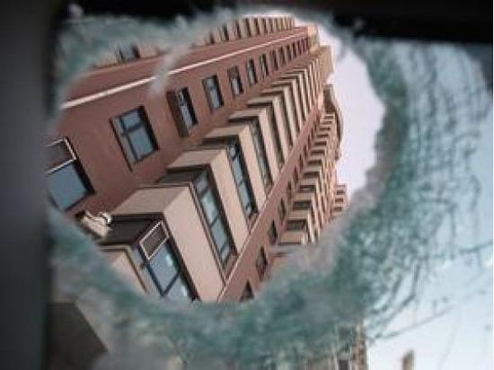

1. Project Introduction
1.1 Background:
Nowadays, thanks to the fast development, tall buildings with more than 20 floors are everywhere in China, and the ratio of tall buildings is increasing. With the convenience of accomodating more people in the city, tall buildings also pose a threat to the safety of others.
When people live in the high floor, some casual, and barely innocent behaviors become deadly, for example, throwing things out of the window. When the object falling from the high, its great potential energy directs to such strong momentum that it can cause death to people being hit. Findings said: a 30g egg falling from the 4th floor can cause a bump in the head; falling from 8th floor can hurt the scalp; falling from 18th floor can hit through the skill; falling from 25th floor can cause death immediately.
Although there have been laws punishing such behavior, there still exist some people throwing things like garbage, and watter bottle, etc. Nowadays, several cameras will be installed facing upward and record the sides of the buildings 24/7. If there is one incident of objects falling from the high, the police will look through the recordings to determine the criminal.
However, these is usually one camera for each side of the building. Object like an egg in the image will have less than 10 pixels in size. It is difficult to stare at the recordings for hours and detect such small objects falling from one window. So replacing the original camera with a new device that can quickly detect such incident and alert the police beomes an urgent need.

1.2 Objectives:
Developed a system that integrates a camera recording upward 24/7. a real-time algorithm that detects objects falling, generates evidence with object’s falling trajectory, and automatically alert the police.
1.3 Difficulties:
Popular neural network based CV method cannot work because of these reasons:
- Objects look very small (< 10 pixels) in the image.
- Overall system should not be expensive (hardware does have much processing power like GPU) because objects falling from the high is rare.
There is no size information about an object. object like a bird or a bug can look like a large object far from the camera.
Various weather conditions like strong wind that cause the camera to shake, rainy and snowy days that greatly increase the false alarm percentage of the system.
Objects have similar color as the building. In its falling video, the object may ‘“vanish”‘ for a few frames, making its tracking difficult. What is more, the window on the side of the building reflects the sky, and bird flying at centain angle may look like a falling object on the window.
2. Software and Hardware Environment
2.1 Hardware:
Windows10 64bits, 8GB RAM, Intel Pentium CPU G4560@3.5GHz
2.2 Software:
Python3.7：{psutil, websockets, tqdm, scikit-learn, pyinstaller, loguru, numpy, opencv-python, opencv-contrib-python}
3. Overall System Design
1 | st=>start: Start |
4. System Functions Design:
4.1 Read video:
4.1.1 Supports reading video from camera in real-time (around 25 fps)
4.1.2 Supports setting skip_frame parameter(actual processing speed becomes 25/skip_frame fps), in case the algorithm is not fast enough
4.2 Process frame to detect moving objects:
4.2.1 Image preprocessing: use Gaussian Blur to denoise
4.2.2 Applies frame difference on consecutive frames, and use adaptive threshold to filter the moving area.
4.2.3 Compare the ratio of total moving area to the entire area. If this ratio exceeds a threshold, decides this as an invalid frame.
This helps to decrease the false alarm percentage during rainy and snowy days.
Use two-buffer that both store several frames up to the current frame, compare if the image has become stable and ready to detect again.
4.2.4 Performs image dilation on the resulting moving area image to merge near-by moving area. Filter moving area by its size and width-height ratio.
4.2.5 Inframe Denoise: Extracts centers of these moving area. Keep only one center with the highest y-value in a 40x40 area.
4.2.6 Between-Frames Denoise: Relates the Idea from the background subtraction. Compare moving area in the recent frames. if there exist repeated moving areas across several recent frames, consider them as flicker noise.
4.3 Track moving objects across frames:
4.3.1 Idea is to compare the current moving objects with predictions from several previous frame’s Kalman Filters and selects the most possible one. Each kalman filter corresponds to one falling object.
4.3.2 Define a min_dist parameter that will decide if a moving point is part of the previous trajectories. If a new moving point belongs to one trajectory, updates that corresponding kalman filter. Otherwise, creates a new Kalman Filter for this moving point. Decide if a new moving point belongs to one trajectory following these rules:
Compare the likelihood of a new moving point with predictions from all Kalman Filters.
Out of all trajectories, if many trajectories have similar likelihood, the new point will belong to the longest trajectory.
4.3.3 Decide if current trajectories exist object falling trajectory:
4.3.3.1 Number of detected frames must exceed the min_falling_frames threshold.
4.3.3.2 The y-value difference between the highest point and the lowest point must exceed the min_yfall_total threshold.
4.3.3.3 The falling speed of the trajectory must satisfy some thresholds.
4.3.3.4 The x-direction moving speed must not increase during the entire trajectory.
4.3.3.5 Smoothen the trajectory and decide if there exist too many segments that is less than 45 deg (unlikely to see in a normal falling trajectory).
4.4 Generate alarm image and evidence video and upload
4.4.1 A seperate thread keeps receiving frame and is_falling signal from the processor. Once a is_falling signal is detected, starts a new thread that draws bounding box around the falling object, and draws the trajectory of the falling object.
4.4.2 Save the alarm image and evidence video locally and inserts a record into local database.
4.4.3 An upload thread will continuously read the database if one new record is inserted, and then upload the falling information to the remote FTP server.
4.4.4 Send alarm including the time and location of the detection, and http download link of evidence to the remote server using websocket.
5. Client-side Control UI (only Chinese version):
5.1 Starting Panel

5.2 Adding a new camera and configure

5.3 Drawing IoT for detection

5.4 Finish adding the device